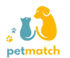

<aside id="sidebar">
  <div id="logo"></div>
  <div>
    <div id="profile">
      <div>
         
        <div id="profile-info">
          <h3>Ricardão</h3>
          <span><i class="material-icons">stars</i>5.0</span>
        </div>
      </div>
      <button class="btn-style" id="btn-perfil">Perfil <i class="material-icons" style="font-size: 1em; vertical-align: middle;">launch</i></button>
    </div>
    <nav id="menu">
      <a href="../homepage/homepage.html"><i class="material-icons">home</i> Home</a>
      <a href="../explore/index.html"><i class="material-icons">explore</i> Explorar</a>
      <a href="../PaginaCategoria/Categorias.html"><i class="material-icons">category</i> Categorias</a>
      <a href="../favoritos/pets/index.html"><i class="material-icons">favorite</i> Favoritos</a>
      <a href="../apadrinhar/apadrinhar.html"><i class="material-icons">volunteer_activism</i> Apadrinhar</a>
      <a href="../historico/historico.html"><i class="material-icons">history</i>Histórico</a>
      <a href="#"><i class="material-icons">pets</i> Meus Pets</a>
      <a href="#"><i class="material-icons">map</i> Petmap</a>
      <a href="../tips/tips.html"><i class="material-icons">lightbulb</i> Pet Tips</a>
    </nav>
  </div>
  <div id="aside-footer">
    <a href="../cadastro-pets/cadastro-pets.html" class="btn-style btn-adocao">Colocar para Adoção</a>
    <button class="btn-logout btn-style" id="btn-sair">Sair</button>
  </div>
</aside>